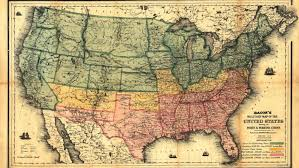

vroeger
Een aantal jaren nadat Columbus Amerika had ontdekt in1492 wordt tijdens
een expeditie in opdracht van de Engelse koning Hendrik VII Noord-Amerika ontdekt in 1497.
Drie eeuwen later brak er een onafhankelijkheidsstrijd los en werd de Verenigde Staten in 1776 onafhankelijk van Engeland.
nbspWeer een eeuw later werd de slavernij afgeschaft tijdens een 4 jaar durende burgeroorlog.
nbspHierna groeide Amerika veel, onder andere vanwege de groei van immigranten uit Europa. De Verenigde Staten werd een wereldmacht.

|